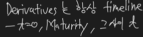

Derivatives

LOS 37.a: Describe and compare how equity, interest rate, fixed-income, and currency forward and futures contracts are priced and valued.
LOS 37.b: Calculate and interpret the no-arbitrage value of equity, interest rate, fixed-income, and currency forward and futures contracts.
Forward contract
Long forward position – agrees to buy the financial or physical asset
Short forward position – agrees to sell/deliver the asset
Typically, no money changes hands at the inception of the contract, unlike futures contracts.
At any point in time, forward contract is a zero-sum game.
The no-arbitrage principle
Forward price refers to the forward price of the underlying.
No-arbitrage principle - The price that we wish to determine is the forward price that makes the values of both the long and the short positions zero at contract initiation. There should be no riskless profit to be gained by a combination of a forward contract position with positions in other assets.
This principle assumes that (1) transactions costs are zero, (2) there are no restrictions on short sales or the use of short sale proceeds, and (3) both borrowing and lending can be done in unlimited amounts at the risk-free rate of interest.
Forward price = price that prevents profitable riskless arbitrage in frictionless markets
A simple version of the cost-of-carry model
Cash and carry arbitrage when the forward contract is overpriced compared to no-arbitrage price
Reverse cash and carry arbitrage when the forward contract is underprice compared to no-arbitrage price
Short spot asset, long forward
Day count convention
All LIBOR-based contracts such as FRAs, swaps, caps, floors, etc
360 days per year and simple interest
Equities, bonds, currencies, and stock options
365 days per year and periodic compound interest
Equity indexes
365 days per year and continuous compounding
Pricing and valuation of equity forwards
Equity forward contracts with discrete dividends
진정한 기초자산이 뭔지 확인하고, 그 기초자산을 무위험 이자율로 굴려나가면 forward price
Equity forward contracts with continuous dividends
Underlying asset is an equity index.
Continuous dividend는 dividend yield로 표시됨
Pricing and valuation of fixed income forwards

Clean price는 해당 주기에서의 bond 가격
Full price는 실제 bond market에서 거래되는 가격, 해당 bond를 사려면 지불해야 하는 실제 가격 – accrued interest 포함
UST – semiannual
Bond futures contracts often allow the short an option to deliver any of several bonds, which will satisfy the delivery terms of the contract. This is called a delivery option and is valuable to the short. Each bond is given a conversion factor that is used to adjust the long’s payment at delivery so the more valuable bonds receive a lager payment. These factors are multipliers for the futures price at settlement. The long pays the futures price at expiration, multiplied by the conversion factor (CF).
가격표시는 clean price로 되지만, 실제 futures price를 거래할 때는 accrued interest의 현재가치를 빼준 full price를 사용해야 한다.
Pricing forward rate agreements
LIBOR – London Interbank Offered Rate
It is quoted as an annualized rate based on a 360-day year.
The long position in a forward rate agreement (FRA) is the party that is effectively borrowing money (long the loan, with the contract price being the interest rate on the loan).
Pricing FRAs
\1. LIBOR rates in the Eurodollar market are add-on rates and are always quoted on a 30/360 day basis in annual terms.
\2. The long position in an FRA is, in effect, long the rate and benefits when the rate increases.
\3. Although the interest on the underlying loan won’t be paid until the end of the loan. Therefore, the payoff on the FRA is the present value of the interest savings on the loan.
The forward price in an FRA is actually a forward interest rate.
Valuation of forward rate agreements
Pricing and valuation of currency contracts
Interest rate parity is based on a no-arbitrage condition: a higher interest rate currency will trade at a forward discount to offset the extra interest income.
항상 가격 표시는 price currency (foreign currency)로

Futures contract
Futures contract are very much like the forward contracts except that they trade on organized exchanges.
To safeguard the clearinghouse, the exchange requires both sides of the trade to post margin and settle their accounts on a daily basis. Thus, the margin in the futures markets is a performance guarantee.
Marking to market is the process of adjusting the margin balance in a futures account each day for the change in the value of the contract from the previous trading day, based on the settlement price.
Like forward contracts, futures contracts have no value at contract initiation. Unlike forward contracts, futures contracts do not accumulate value changes over the term of the contract. Since futures accounts are marked to market daily, the value after the margin deposit has been adjusted for the day’s gains and losses in contract value is always zero.
LOS 37.c: Describe and compare how interest rate, currency, and equity swaps are priced and valued.
LOS 37.d: Calculate and interpret the no-arbitrage value of interest rate, currency, and equity swaps.
One party agrees to pay floating (borrow at the floating rate) and receive fixed (lend at a fixed rate). At initiation of the swap, the fixed rate is selected so that the present value of the floating-rate payments is equal to the present value of the fixed-rate payments, which means the swap value is zero to both parties. This fixed rate is called the swap fixed rate.
Computing the swap fixed rate
Calculating the market value of an interest rate swap

Currency swaps
The interest rates in a currency swap are simply the swap rates calculated from each country’s yield curve in the relevant country’s currency.
Equity swaps
A swap of returns on two different stocks can be viewed as buying one stock (receiving the returns) and shorting an equal value of a different stock (paying the returns). There is on pricing at swap initiation.
LOS 38.a: Describe and interpret the binomial option valuation model and its component terms.
LOS 38.b: Calculate the no-arbitrage values of European and American options using a two-period binomial model.
LOS 38.e: Describe how the value of a European option can be analyzed as the present value of the option’s expected payoff at expiration.
A binomial model is based on the idea that, over the next period, the value of an asset will change to one of two possible values (binomial). To construct a binomial model, we need to know the beginning asset value, the size of the two possible changes, and the probability of each of these changes occurring.
- Calculating the payoff of the option at maturity in both the up-move and down-move states.
- Calculating the expected value of the option in one year as the probability-weighted average of the payoffs in each state.
- Discounting the expected value back to today at the risk-free rate.
Two period binomial model and put-call parity
Put call parity can be used to create a synthetic instrument that replicates the desired instrument.
American option
While the early exercise feature is not valuable for call options on non-dividend paying stocks, deep-in-the-money put options could benefit from early exercise. When an investor exercises an option early, she captures only the intrinsic value of the option and forgoes the time value. While the intrinsic value can be invested at the risk-free rate, the interest so earned is less than the time value in most cases. For deep-in-the-money put option, the upside is limited. In such cases, the interest on intrinsic value can exceed the option’s time value.
American-style call options on dividend-paying stocks can be evaluated similarly. For dividend-paying stocks the stock price falls when the stock goes ex-dividend, and it may take sense to exercise the call option before such a decline in price.

LOS 38.d: Calculate and interpret the value of an interest rate option using a two-period binomial model.
The interest rates are selected so that the risk-neutral probabilities of up- and down-moves are both equal to 0.5.
Call payoff = notional principal * Max(0, reference rate – exercise rate)
Maturity 시점에서 바로 settelement되는 가정
LOS 38.f: Identify assumptions of the Black-Scholes-Merton option valuation model.
The BSM option valuation model values options in continuous time, but it based on the no-arbitrage condition we used in valuing options in discrete time with a binomial model. To derive the BSM model, an instantaneously riskless portfolio (one that is riskless over the next instant) is used to solve for the option price.
The assumptions underlying the BSM model are
\1. The underlying asset price follows a geometric Brownian motion process. Therefore, the asset price has a lognormal distribution. In other words, the continuous compounded return is normally distributed. Under this framework, change in asset price is continuous: there are no abrupt jumps.
\2. The continuous compounded risk-free rate is constant and known. Borrowing and lending are both at the risk-free rate.
\3. The volatility of the returns from inception to maturity on the underlying asset is constant and known. The price of the underlying changes smoothly.
\4. Markets are frictionless. There are no taxes, no transactions costs, and no restrictions on short sales or the use of short-sale proceeds. Continuous trading is possible, and there are no arbitrage opportunities in the marketplace.
\5. The continuously compounded yield from inception to maturity on the underlying asset is constant.
\6. The options are European options.
LOS 38.g: Interpret the components of the Black-Scholes-Merton model as applied to call options in terms of a leveraged position in the underlying.
The BSM value can be thought of as the present value of the expected option payoff at expiration.
Calls can be thought of as a leveraged stock investment where N(d1) units of stock are purchased using borrowed funds.
N(d2) is interpreted as the risk-neutral probability that a call option will expire in the money.
LOS 38.h: Describe how the Black-Scholes-Merton model is used to value European options on equities and currencies.
LOS 38.i: Describe how the Black model is used to value European options on futures.
The value of a call option on futures is equal to the value of a portfolio with a long futures position (the PV of the futures price multiplied by N(d1)) and a short bond position (the PV of the exercise price multiplied by N(d2))
The value of a put option is equal to the value of portfolio with a long bond and a short futures position.
The value of a call can also be thought of as the present value of the difference between the futures price adjusted by N(d1) and the exercise price adjusted by N(d2).
LOS 38.j: Describe how the Black model is used to value European interest rate options and European swaptions.
Interest rate options are options on forward rates (or options on FRAs). A call option on an FRA gains when rates rise, and a put option on an FRA gains when rates fall.
Equivalencies in interest rate derivatives contracts
\1. A long interest rate call and a short interest rate put (with exercise rate = current FRA rate) can be used to replicate a long FRA.
\2. If the exercise rate = the current FRA rate, a short interest rate call and long interest rate put can be combined to replicate a short FRA position.
\3. A series of interest rate call options with different maturities and the same exercise price can be combined to form an interest rate cap. Each of the call options in an interest rate cap is known as a caplet. A floating rate loan can be hedged using a long interest rate bond.
\4. An interest rate floor is a portfolio of interest rate put options, and each of these puts is known as a floorlet. Floors can be used to hedge a long position in a floating rate bond.
\5. If the exercise rate on a cap and floor is same, a long cap and short floor can be used to replicate a payer swap.
\6. A short cap and long floor can replicate a receiver swap.
\7. If the exercise rate on a floor and a cap are set equal to a market swap fixed rate, the value of the cap will be equal to the value of the floor.
Swaptions
A swaption is an option that gives the holder the right to enter into an interest rate swap.
A swaption is equivalent to an option on a series of cash flows (annuity), one for each settlement date of the underlying swap, equal to the difference between the exercise rate on the swaption and the market swap fixed rate.
If PVA represents the present value of such an annuity, the value of a payer swaption using the Black model can be calculated.
Equivalencies
A long callable bond can be replicated using a long position option-free bond plus a short receiver swaption.
LOS 38.k: Interpret each of the option Greeks.
Delta
Delta describes the relationship between changes in asset prices and changes in option prices. Delta is also the hedge ratio. Call option deltas are positive because as the underlying asset price increases, call option value also increases. Conversely, the delta of a put option is negative because put value falls as the asset price increases.
Interpreting Delta
The bottom line is that a call option’s delta will increase from 0 to 1 as non-dividend paying stock price increase. For a non-dividend paying stock, the put delta increases from -1 to 0 as the stock price increases.
Gamma
Gamma measures the rate of changes in delta as the underlying stock price changes. Gamma captures the curvature of the option-value-versus-stock-price relationship. Long positions in calls and puts have positive gamma.
Gamma is highest for at-the-money options. Deep-in-the-money or deep-out-of-the-money options have low gamma. Gamma changes with stock price and with time to expiration. To lower (increase) the overall gamma of a portfolio, one should short (go long) options.
Call and put options on the same underlying asset with the same exercise price and time to expiration will have equal gammas.
Vega
Vega measures the sensitivity of the option price to changes in the volatility of returns on the underlying asset. Both call and put options are more valuable, all else equal, the higher the volatility, so vega is positive for both calls and puts.
Rho
Rho measures the sensitivity of the option price to change in the risk-free rate.
Theta
Theta measures the sensitivity of option price to the passage of time. As time passes and a call option approaches maturity, its speculative value declines, all else equal. This is called time decay. That behavior also applied for most put options (though deep in-the-money put options closed to maturity may actually increases in value as time passes). Because it is a measure of time decay, theta is less than zero: as time passes and the option approaches the maturity date, the option value decreases (holding other factors constant).

| Sensitivity factor (Greeks) | Input | Long call | Long put |
|---|---|---|---|
| Delta | Asset price | Positively related | Negatively related |
| Gamma | Delta | Positive | Positive |
| Vega | Volatility | Positive | Positive |
| Rho | Risk-free rate | Positive | Negative |
| Theta | Time to expiration | Negative | Negative |
| Exercise price | Negatively related | Positively related |
LOS 38.l: Describe how a delta hedge is executed.
The goal of a delta-neutral portfolio or delta-neutral hedge is to combine a long position in a stock with a short position in a call option so that the value of the portfolio does not change as the stock price changes.
Number of short call options needed to delta hedge = number of shares hedged / delta of call option
Number of long put options needed to delta hedge = - number of shares hedged / delta of put option
A key consideration in delta-neutral hedging is that the delta hedged asset position is only risk-free for a very small change in the value of the underlying stock. The delta-neutral portfolio must be continually rebalanced to maintain the hedge; for this reason, it is called a dynamic hedge.
LOS 38.m: Describe the role of gamma risk in option trading.
Gamma risk is therefore the risk that the stock price might abruptly jump leaving an otherwise delta-hedged portfolio unhedged.
Consider a delta hedge involving a long position in stock and short position in calls. If the stock price falls abruptly, the loss in the long stock position will not equal to gain in the short call position. This is the gamma risk of the hedge.
Because a stock’s delta is always 1, its gamma is 0. A delta-hedged portfolio with a long position in stocks and a short position in calls with have negative net gamma exposures.
LOS 38.n: Define implied volatility and explain how it is used in options trading.
Future volatility is one of the inputs in the BSM model. Estimates based on historical volatility are often used because future volatility is not directly observable.
Traders often use implied volatilities to gauge market perceptions.
Traders can also used implied volatility as a mechanism to quote option prices.